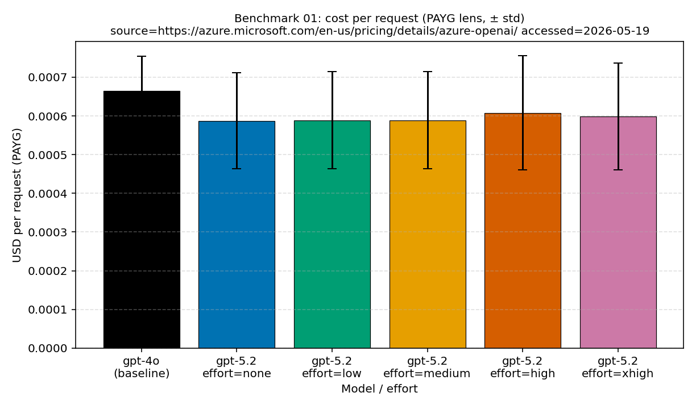

विषय-लेख · benchmark-01 छोटे तथ्यात्मक काम
छोटे तथ्यात्मक काम: जब ज़्यादा reasoning गुणवत्ता नहीं, सिर्फ़ लागत बढ़ाती है
जब कोई टीम पहली बार reasoning model अपनाती है, तो छोटे तथ्यात्मक सवाल effort की घुंडी घुमाने की सबसे सुरक्षित जगह लगते हैं। जवाब छोटा होता है, ग़लती जल्दी पकड़ में आती है, और “थोड़ा और सोचने दो” सस्ते बीमे जैसा सुनाई देता है। इसलिए सबसे पहले reasoning effort बढ़ाने का मन करता है। लेकिन यह shipping policy नहीं, जाँचने लायक़ hypothesis है; यह लेख उसे डेटा से परखता है।
इस सहज धारणा को क्यों जाँचा
यह दृश्य जाना-पहचाना है। migration के बाद टीम reasoning model पर आती है, configuration में reasoning effort की घुंडी दिखती है, और छोटे तथ्यात्मक सवाल सबसे सुरक्षित case लगते हैं। output छोटा है, ग़लती साफ़ दिखती है, और “थोड़ा और सोचने दो” सस्ते बीमे जैसा सुनाई देता है; इसलिए default भी यहीं बढ़ाना लगभग मुफ़्त लगता है।
इससे एक साफ़ hypothesis बनती है। छोटे तथ्यात्मक काम में, क्या ज़्यादा reasoning effort सचमुच जवाब को ज़्यादा सुरक्षित बनाता है? अगर हाँ, तो ऊँचा default सही है। अगर नहीं, तो टीम ऐसी सोच का दाम दे रही है जो पाठक तक पहुँचती ही नहीं।
इसलिए हमने इसे मापा। workload shape वही रखा — छोटे तथ्यात्मक काम का यही मापा गया हिस्सा — और effort के स्तरों को एक-एक करके देखा। हर स्तर पर प्रति-request लागत, latency, दिखने वाला जवाब, छिपे reasoning tokens और जज स्कोर की तुलना की। इस केस में नतीजा इतना साफ़ था कि default बदलने की बात की जा सके: effort ने लागत, latency और hidden tokens खरीदे, लेकिन बेहतर जवाब नहीं खरीदा। नीचे का one-pager यही बात एक फ़्रेम में कहता है, और आगे के section मापा हुआ detail देते हैं।

प्रश्न
अगर काम में ज़्यादातर छोटे तथ्यात्मक जवाब चाहिए, तो क्या ज़्यादा reasoning effort quality को इतना सुधारता है कि बिल जायज़ लगे?
साक्ष्य
benchmark-01 के लागत, quality, latency और token-shape chart, सार्वजनिक data tables के साथ।
नतीजा
इस हिस्से में प्रति-request लागत लगभग सपाट रही: none से xhigh तक लगभग 1.02x, और हर gpt-5.2 tier gpt-4o baseline से नीचे था। औसत जज स्कोर 1.95 के आसपास रहा।
निर्णय
जो सबसे कम effort पहले से सही जवाब दे रहा है, उसे default रखें। उसे तभी बढ़ाएँ जब evaluator इस workload shape पर सचमुच quality lift दिखाए।
डेटा ने क्या दिखाया
hypothesis यह थी कि ज़्यादा effort पर जवाब ज़्यादा सुरक्षित होगा। डेटा ने ऐसा नहीं दिखाया। cost bars लगभग सपाट रहती हैं — none effort पर $0.000587 और xhigh पर $0.000598, यानी लगभग 1.02x span, और हर gpt-5.2 tier gpt-4o baseline $0.000665 से नीचे है — quality bars भी उतनी ही सपाट हैं: औसत जज स्कोर ladder पर लगभग 1.95 है, baseline के 1.90 के बराबर या ऊपर। latency में भी trend नहीं है (बिना climb के लगभग 1.4s से 1.7s), और token-shape throughput factor 0.99 के आसपास रहता है।
यानी न cost bars effort के साथ चलीं, न quality bars। chart की पूरी बात बस इतनी है। reasoning पर ज़्यादा खर्च करने से न सस्ता bill मिला, न बेहतर जवाब; और सबसे कम setting पर gpt-5.2 पहले ही gpt-4o baseline से match या beat कर रहा था। इस workload shape में ऊँचा effort default नहीं, experimental setting रहना चाहिए।
परिकल्पना ग़लत क्यों हो सकती है
सुरक्षित दिखने वाला default फिर भी निराश कर सकता है, क्योंकि छोटे तथ्यात्मक काम में लंबे internal search की ज़रूरत कम पड़ती है। जब जवाब एक ही तथ्य हो, तो bottleneck अक्सर retrieval, stable prompt, या बस वही सबसे कम effort setting होती है जो पहले से सही जवाब दे रही है — अतिरिक्त deliberation नहीं। उस बिंदु के बाद model के पास खोजने को कुछ नया नहीं बचता, इसलिए effort बढ़ने पर accuracy नहीं, सिर्फ़ छिपे tokens बढ़ते हैं।
यही pattern इस हिस्से में दिखता है। जज स्कोर effort के साथ नहीं बढ़ता; वह 1.95 के आसपास रहता है, और cost, latency, reasoning tokens भी लगभग सपाट रहते हैं। यहाँ pay करने लायक hidden thinking लगभग नहीं है। इसलिए इस हिस्से में ऊँचा default वह कुछ नहीं खरीदता जो सस्ती setting पहले से न दे रही हो।
चार्ट कैसे पढ़ें
ये aggregate bar charts हैं, frequency histograms नहीं। benchmark-01 में हर bar एक अलग effort configuration दिखाती है, इसलिए तुलना इस बात की है कि वही workload shape effort बढ़ने पर कैसे बदलता है।
X-अक्ष
bars reasoning effort के स्तर बाएँ से दाएँ दिखाती हैं — baseline, none, low, medium, high, xhigh। इसे वही setting समझें जिसे operator बदल सकता है।
Y-अक्ष
cost chart में bar height का मतलब mean USD per request है। quality chart में bar height mean जज स्कोर है। इन्हें अलग-अलग नहीं, जोड़ी में पढ़ें।
बार और तालिका
हर bar एक aggregate configuration है। chart के नीचे की table exact value, जहाँ उपलब्ध हो वहाँ standard deviation, और sample count दिखाती है। error bars confidence interval नहीं, standard deviation हैं।
docs/blog/data/chart-data/cost-curves-effort/benchmark-01/cost-per-request.json
से आती हैं; इसे evidence dashboard
(served chart data) के साथ पढ़ें।

docs/blog/data/chart-data/cost-curves-effort/benchmark-01/quality.json
से आती हैं; इसे evidence dashboard
(served chart data) में
cost chart के साथ पढ़ें।

मूल चार्ट क्या जोड़ते हैं
हर source chart फ़ैसले का अलग हिस्सा साफ़ करता है। cost chart बताता है कि setting कितनी महँगी है। quality chart बताता है कि उस खर्च से जवाब बेहतर हुआ या नहीं। latency और token composition operational side effect दिखाते हैं। throughput view उसी token shape को capacity planning के दबाव में बदलकर दिखाता है।
| Source chart | इसे कैसे पढ़ें | दिखा क्या | फ़ैसले पर असर |
|---|---|---|---|
| Cost per request | X-अक्ष effort level है; Y-अक्ष mean USD per request है। | none effort पर $0.000587; xhigh effort पर $0.000598; baseline $0.000665। | bill flat और baseline से नीचे रहता है, इसलिए higher effort को कुछ prove नहीं करना। |
| Quality guardrail | X-अक्ष वही effort levels हैं; Y-अक्ष mean जज स्कोर है। | none effort पर 1.95; xhigh effort पर 1.95; baseline 1.90। | quality flat है और पहले से baseline के बराबर या ऊपर है। |
| Latency | X-अक्ष effort level है; Y-अक्ष mean response latency है। | none effort पर लगभग 1.7s; xhigh effort पर लगभग 1.4s, ladder में कोई trend नहीं। | latency noisy है, effort की cost नहीं। |
| Token composition | X-अक्ष effort level है; Y-अक्ष mean tokens per request है। | reasoning tokens zero के पास रहते हैं (none पर 0, high पर लगभग 1.35); visible output सिर्फ़ लगभग 14.0 से 14.8 tokens तक बदलता है। | इस हिस्से में hidden billable growth लगभग नहीं है। |
| Token-shape throughput | X-अक्ष effort level है; Y-अक्ष baseline के मुक़ाबले throughput factor है। | factor none से xhigh तक 0.99 के आसपास रहता है। | traffic shape को extra capacity headroom नहीं चाहिए। |
क्या हुआ
लागत-रेखा सपाट रही। none effort पर औसत $0.000587 per request था, xhigh effort पर औसत $0.000598 per request — लगभग 1.02x span — और हर gpt-5.2 tier gpt-4o baseline $0.000665 से नीचे था। paired quality भी flat थी: औसत जज स्कोर 1.95 के आसपास रहा, baseline के 1.90 के बराबर या ऊपर।
यह "reasoning बुरी है" जैसा सार्वभौमिक दावा नहीं है। यह सिर्फ़ workload shape के बारे में दावा है। इस हिस्से में pay करने लायक अतिरिक्त internal computation लगभग नहीं थी, और effort बढ़ाने से न सस्ता bill मिला, न बेहतर जवाब। dashboard लागत और quality को साथ रखता है, इसलिए यह साफ़ दिखता है।
सबसे बड़ा trap उलटी intuition है: higher effort ज़रूर safer होगा। अगर reviewer सिर्फ़ कुछ जवाब देखे, तो xhigh effort ज़्यादा सुरक्षित महसूस हो सकता है क्योंकि model ज़्यादा सोचता हुआ लगता है। chart इसी intuition को policy बनने से रोकता है: वह दिखाता है कि quality delta flat है, इसलिए सस्ती setting धीमे या बड़े bill के बिना वही जवाब रखती है।
मापते हुए हमने क्या सीखा
ज़्यादा सोचना अपने-आप default नहीं बनता
effort एक treatment है। इसे किसी एक हिस्से पर लगाकर मापें, और तभी बढ़ाएँ जब evaluator सचमुच बदले। इसे global default बना देने से production traffic आने तक बिल छिपा रहता है।
लागत को quality के साथ ही पढ़ें
सिर्फ़ cost chart बदलाव को साफ़ लेकिन अधूरा दिखा सकता है। सिर्फ़ quality chart आर्थिक असर छिपा सकता है। काम की सही reading जोड़ी में है: खर्च कितना बढ़ा, और क्या जवाब सचमुच बेहतर हुआ?
छोटे तथ्यात्मक काम के लिए low-effort baseline ज़रूरी है
सबसे कम स्वीकार्य effort level वही baseline है जिसे हर ऊँचे level को हराना चाहिए। अगर quality में वह आगे नहीं निकलता, तो operator को सस्ती setting रखनी चाहिए और optimization का समय कहीं और लगाना चाहिए।
निर्णय कब दोबारा देखें
इस नतीजे को हमेशा के लिए freeze मत कीजिए। अगर काम short recall से synthesis में बदल जाए, evaluator rubric multi-hop justification को reward करने लगे, prompt में tool outputs आने लगें, या नया model लागत-गुणवत्ता का पैटर्न बदल दे, तो इसे फिर से जाँचिए। सबक़ यह नहीं है कि reasoning कभी इस्तेमाल न करें। सबक़ यह है: paired evidence के बिना effort मत बढ़ाइए।
अच्छा follow-up experiment वही X-axis रखता है, लेकिन workload shape बदल देता है। छोटे तथ्यात्मक, multi-step, tool-agent और synthesis tasks — हर एक को अपनी effort setting डेटा से कमानी चाहिए। आम तौर पर reasoning की असली value इसी routing policy में निकलती है।
स्रोत और साक्ष्य-सीमा
ऊपर दिया गया हर number इस repository की किसी public artifact तक trace होता है, और लागत का हर आँकड़ा एक dated pricing snapshot पर निकाला गया है। इस हिस्से में ऊँचा effort experimental रहना चाहिए — यह operational interpretation इस लेख की अपनी है। नीचे के दो tier बताते हैं कि documented input कहाँ ख़त्म होता है और inference कहाँ से शुरू होती है।
- [1] Tier 1 — methodology contract: यह repository,
docs/05-methodology.md(v1.0)। हर configuration पर N = 20 authored samples, R = 3 repeats, और सिर्फ़ public aggregate डेटा। चार्ट की व्याख्या इसी fixed stance पर आधारित है; error bars standard deviation हैं, confidence interval नहीं, और N = 20 पर p-value claim नहीं किया गया है। - [2] Tier 1 — PAYG मूल्य स्नैपशॉट: प्रति-request लागत (none effort का $0.000587, xhigh effort का $0.000598, दोनों $0.000665 baseline से नीचे) इस रिपॉज़िटरी की
pricing/azure-openai-payg-2026-05.yamlपर गणित है। accessed 2026-05-19: Azure OpenAI pricing page; archive। list pricing बदलने पर figures बदलेंगे। - [3] Tier 2 — short-factual measurement: यह repository,
benchmarks/01-short-factual/analysis.json। यहीं से flat per-request cost, लगभग 1.95 mean जज स्कोर (gpt-4o baseline 1.9), लगभग 1409 ms और 1713 ms के बीच no-trend latency, और throughput factor का 0.99 के पास रहना मिलता है। - [4] Tier 2 — rendered chart डेटा: यह repository,
docs/blog/data/chart-data/cost-curves-effort/benchmark-01/(cost-per-request.json,quality.json,latency.json,throughput-gain.json) औरdocs/blog/data/chart-data/token-composition/benchmark-01/tokens.json। यहीं से near-zero reasoning tokens (none पर 0.0, high पर 1.35) और visible output का सिर्फ़ लगभग 14.0 से 14.8 tokens तक बदलना दिखता है। - [5] Evidence dashboard: evidence dashboard की per-configuration tables और rendered source charts इन्हीं artifact का auditable रूप हैं।
यह हिस्सा क्या साबित करता है, और क्या नहीं: छोटे तथ्यात्मक काम के इस workload shape में, एक tenant और एक region पर, इसी pricing snapshot के तहत, effort ladder ने लागत और hidden tokens खरीदे लेकिन matching quality lift नहीं मिली। यह यह साबित नहीं करता कि यही pattern synthesis, multi-step या tool-using काम में भी रहेगा, या future pricing snapshot पर भी वैसा ही दिखेगा।
व्यावहारिक नियम
व्यावहारिक नियम: छोटे तथ्यात्मक काम को उसी सबसे कम effort पर रखें जो पहले से सही जवाब दे रहा है। उसे तभी बढ़ाएँ जब इसी workload shape पर quality gate सचमुच बदले — और वह फ़ैसला paired लागत, latency और token-composition charts के साथ पढ़कर लें।
evidence dashboard उसी नियम का सत्यापन रिकॉर्ड है।
आगे: Invisible reasoning tokens: छिपी हुई लागत आख़िर जाती कहाँ है — अगर answer text छोटा ही रहा, तो अतिरिक्त लागत आई कहाँ से?